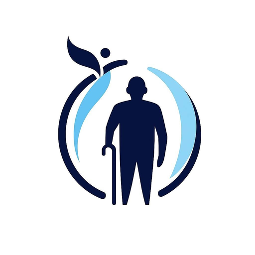

🏥 Valoración Prequirúrgica — Centro Geriátrico de los Altos
🗑 Limpiar
🖨 Imprimir
📄 Guardar PDF

CENTRO GERIÁTRICO DE LOS ALTOS
Dr. Diego Gómez López · Geriatría
Céd. Esp. 14389136 · Céd. Prof. 12161065 · Universidad de Guadalajara
Carr. Arandas–Tepa Km 2 · Tel. 348-130-9765 · dr.diegogmezlop@gmail.com
VALORACIÓN PREQUIRÚRGICA
Complete los datos del paciente
Documento Médico Confidencial
IAM < 6 meses (+10)
S3 o yugular distendida (+11)
Estenosis aórtica (+3)
Ritmo no sinusal (+7)
Edad > 70 años (+5)
Cirugía urgente (+4)
Mal estado general (+3)
Cirugía intraperitoneal/torácica (+3)
0
/ 53 pts
Clase I
Escala de Downton — Caídas
Caídas previas (+1)
Sedantes / antidepresivos (+1)
Diuréticos (+1)
Hipotensores (+1)
Antiparkinsonianos (+1)
Déficit visual (+1)
Déficit auditivo (+1)
Deterioro cognitivo (+1)
Marcha insegura (+1)
0
/ 9 pts
Bajo riesgo
Score de Gupta — IAM Perioperatorio
Tipo de cirugía:
Superficial / ambulatoria
Endoscopia / articulación periférica
Cabeza y cuello
Intraabdominal / intratorácica
Aorta / vascular mayor
Urgencia
Dependencia funcional total
ASA III
ASA IV
Creatinina > 1.5 mg/dL
—
% riesgo IAM
Pendiente
PRE-DELIRIC — Riesgo Delirium
Edad ≥ 70 años (+3)
Uso de alcohol (+3)
Deterioro cognitivo (+3)
Cirugía urgente (+3)
ASA ≥ III (+2)
Morfina preoperatoria (+2)
Infección activa (+2)
Anemia preoperatoria (+1)
Hiperglucemia (+1)
Inmovilidad (+1)
0
/ 21 pts
Bajo riesgo
ARISCAT — Complicaciones Pulmonares
Edad 51-80 años (+3)
Edad > 80 años (+16)
SatO₂ 91-95% (+8)
SatO₂ ≤ 90% (+24)
Infección respiratoria último mes (+17)
Anemia Hb < 10 g/dL (+11)
Cirugía intratorácica (+11)
Cirugía intraabdominal (+7)
Duración cirugía 2-3 hrs (+16)
Duración > 3 hrs (+23)
Cirugía urgente (+8)
0
/ 123 pts
Bajo riesgo
Cálculo de Sangrado Permisible (Fórmula Gross)
Hto mínimo aceptable (%)
Tipo de sangre
UGR a cruzar
VSE estimado
—
Hto actual
—
Hto mínimo
—
Hto promedio
—
Sangrado Permisible Máximo
—
IX. ALERTAS AUTOMÁTICAS
✅ Complete los datos del paciente para generar alertas automáticas.
X. PLAN DE OPTIMIZACIÓN PREQUIRÚRGICA
Plan de optimización y recomendaciones
Interconsultas requeridas
Estudios pendientes
XI. CONCLUSIÓN Y CLASIFICACIÓN DE RIESGO
Conclusión Global
Dr. Diego Gómez López
Médico Especialista en Geriatría · Céd. Esp. 14389136 · Céd. Prof. 12161065
Médico Responsable / Cirujano
Nombre: __________________________ · Cédula: __________________________
Centro Geriátrico de los Altos
📅 Fecha de cirugía autorizada